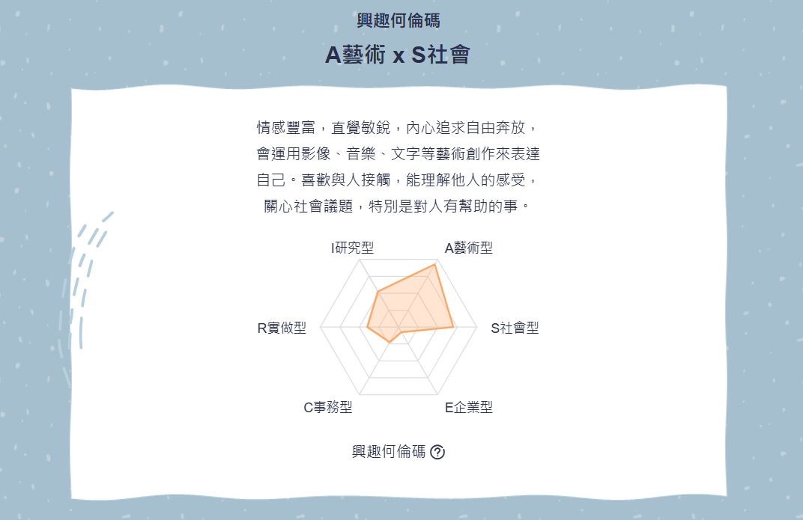
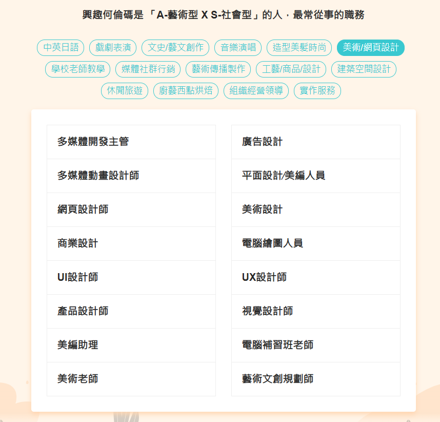

104 興趣何倫碼
測驗結果：共6種，分別為R、I、A、S、E、C
- R：實用型 (Realistic)
- I：研究型 (Investigative)
- A：藝術型 (Artistic)
- S：社會型 (Social)
- E：企業型 (Enterprising)
- C：事務型 (Conventional)
我的Holland碼類型為 : A藝術 & S社會

此類型最常從事的職業

MIS（管理資訊系統）
MIS（Management Information System）是結合「人」、「流程」、「技術」的系統，
幫助組織收集、處理、儲存、分析與傳遞資訊，支援決策、協助業務運作、提高效率與競爭力。
📚 MIS 涵蓋的範圍
- ERP（企業資源規劃）系統 - 如 SAP、Oracle ERP
- CRM（顧客關係管理）系統 - 如 Salesforce
- HRM（人力資源管理）系統 - 如 Workday
- SCM（供應鏈管理）系統 - 如 Kinaxis
- 財務資訊系統、製造管理系統、知識管理系統(KMS)
💼 常見 MIS 職位
- MIS 工程師（MIS Engineer）
- 系統分析師（System Analyst）
- 資料庫管理師（Database Administrator, DBA）
- 企業資訊顧問（IT Consultant）
- 資訊專案經理（IT Project Manager）
🧠 MIS 必備技能
- 資料庫設計與管理（MySQL、SQL Server、Oracle）
- 程式開發能力（Python、Java、PHP）
- 系統分析與設計方法（UML、SDLC）
- 網路基礎知識（TCP/IP, VPN, 防火牆設定）
- ERP/CRM 系統經驗
- 資安知識（防火牆、入侵偵測 IDS/IPS）
📈 MIS 對企業的重要性
- 提供高層快速、準確的資訊輔助決策
- 減少重複作業、提高效率
- 促進部門協作、加強管理
- 降低錯誤率與營運成本
- 推動數位轉型、自動化作業
🌍 MIS 未來趨勢
- 雲端化（AWS、Azure、GCP 等）
- 結合大數據分析與 AI（Decision Support Systems）
- 行動化（Mobile MIS，手機/平板管理）
- 資安防護升級（Cybersecurity）
- 智慧MIS系統（自動流程優化與建議）
求職履歷
根據我的何倫碼測驗結果，我屬於藝術型(A)與社會型(S)的組合。
藝術型的人擅長創造、設計與表達，而社會型的人則喜歡與人互動、協助他人解決問題。
網頁設計師這個職業結合了這兩種特質，一方面能透過網站設計發揮創意，另一方面還能幫助他人有效地呈現資訊與品牌形象。
因此我非常希望朝網頁設計師的這個方向發展。
需要做的準備
- 精通 HTML、CSS、JavaScript 等前端技術
- 學習 RWD 響應式設計技巧
- 熟悉設計工具如 Figma、Photoshop、Illustrator
- 建立 UX / UI 設計思維
- 了解網頁結構與 SEO 基礎
- 建立自己的作品集網站並累積專案經驗
目前的不足與待加強之處
- 程式碼撰寫還不夠熟練，需更多實作練習
- 對色彩與排版的美感需要進一步培養
- 沒有建立完善的使用者經驗設計能力
- 缺乏實際專案經驗，未來會透過實習與接案補足
🌍總結：我相信透過結合藝術創意與助人熱情，網頁設計師會是適合我的職涯方向，未來我會努力去加強自己不足的地方，讓自己成為具備設計與技術能力的全方位人才。